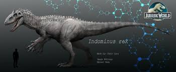

індомінус рекс
Індомінус Рекс (Indominus Rex) – це генетично модифікований вид динозавра з фільму "Світ Юрського Періоду". Він є гібридом Тиранозавра Рекса та інших видів динозаврів, і був створений в рамках секретної програми на острові Сьюард. Індомінус Рекс вирізняється своїми унікальними рисами, включаючи більш рухливу та адаптивну структуру тіла, а також здатність змінювати колір шкіри та маскуватись у навколишньому середовищі. У фільмі він показаний як небезпечний хижак, здатний виявляти високу інтелектуальну активність та стратегічне мислення.Батьки відправляють двох своїх синів на відпочинок у парк під назвою «Світ Юрського періоду». Зака (Нік Робінсон) і Грея (Тай Сімпкінс) Мітчеллів на острові повинна зустріти їхня тітка Клер (Брайс Даллас Говард). Вона надто завантажена роботою через презентацію нового виду динозавра, тому приставляє до братів наглядачку і дає їм пропуск на всі атракціони. За багато років парк розвинувся і його відвідують сотні тисяч людей. Проте відвідуваність падає, а звичними видами динозаврів уже нікого не здивуєш. Тому керівництво вирішує створити новий «експонат». «Індомінус Рекс» — штучно створений генетиками парку вид, що поєднує в собі безліч особливостей різних динозаврів та земноводних. Новий динозавр виявляється надзвичайно розумним та жорстоким водночас. Хижих динозаврів тримають замкнутими у вольєрах. У одній з цих споруд працює Овен Ґрейді (Кріс Пратт), колишній морпіх. Він займається дресируванням велоцирапторів, яких Вік Госкінс (Вінсент Д'Онофріо) планує використовувати у військових конфліктах. Новий власник парку Сімон Масрані (Ірфан Кхан) рекомендує Клер Дірінг порадитись з Овеном Ґрейді щодо безпечності вольєру нової тварини. Але, прибувши до вольєра вони помічають, що на теплових радарах динозавра немає, а, отже, й у вольєрі також. Овен разом з кількома охоронцями йдуть всередину величезної клітки, а Клер телефонує в центр керування, де за датчиками, вживленими в тіло, відстежують місце перебування всіх ящерів парку. Там їй повідомляють, що Індомінус все ще перебуває у вольєрі. Працівників вольєру повідомляють, але вже надто пізно. Індомінус Рекс виривається на волю, вбиваючи всіх на своєму шляху. Овену дивом вдається вижити.